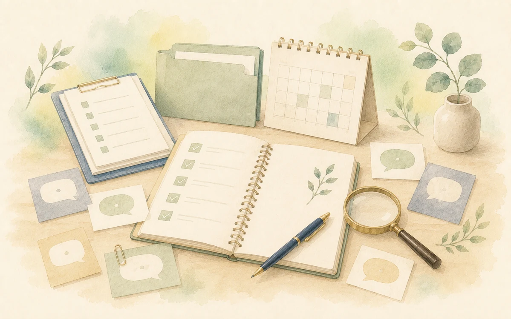

はい、大丈夫です。現在の状況や困っていることをお聞きし、依頼内容を一緒に整理します。
FAQ
よくある質問

先着3枠、5時間以上のご依頼が対象です。匿名での実績紹介と、簡単なご感想にご協力いただける方に限ります。掲載内容は公開前に確認いただきます。
開始日から1か月です。未使用時間は、翌月へ1回のみ繰り越せます。
必ず使用するわけではありません。案件内容やクライアント様のルールに合わせて使用可否を確認します。AIの出力は人が確認・調整します。
Instagram投稿制作では、Canva編集リンクと完成画像を納品します。資料制作でもCanvaで作成する場合は、必要に応じて編集リンクを共有できます。
Instagram投稿は初回2投稿まで修正2回、方向性確定後の継続制作は修正1回です。その他の成果物は、原則として修正1回を含みます。大きな構成変更や追加作業がある場合は、別途ご相談となります。
はい。クリニック、小規模事業者、医療・健康系の個人事業主を中心に、事務整理や資料作成が必要な方からのご相談に対応します。